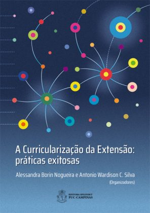

Objetivo dos Projetos de Extensão na PUC
Os projetos de extensão da Pontifícia Universidade Católica (PUC) têm como objetivo principal conectar a universidade à sociedade, promovendo a troca de conhecimento, experiências e ações práticas para enfrentar desafios sociais, culturais, ambientais e econômicos. A extensão é uma das três áreas centrais da universidade, ao lado do ensino e da pesquisa, e busca colocar a teoria acadêmica em prática, gerando impacto positivo nas comunidades.
Por que participar?
Os projetos de extensão da PUC têm como principal objetivo conectar a universidade à sociedade, promovendo a transformação social, o desenvolvimento pessoal e profissional dos participantes e o fortalecimento do diálogo com as comunidades. Esses projetos buscam solucionar problemas reais e contribuir para a melhoria da qualidade de vida, ao mesmo tempo em que enriquecem a formação acadêmica, incentivam a cidadania ativa e estimulam o trabalho interdisciplinar, unindo saberes de diferentes áreas do conhecimento.
Para participar, é necessário informar-se sobre os projetos disponíveis, que geralmente são divulgados no site institucional, redes sociais ou murais da universidade. Após identificar aqueles alinhados aos seus interesses ou área de estudo, é preciso verificar os requisitos e seguir o processo de inscrição, que pode incluir entrevistas, envio de currículo ou reuniões introdutórias. Em caso de dúvidas, o setor de extensão da universidade está disponível para orientar os interessados. Uma vez envolvido, é essencial manter o comprometimento e participar ativamente para contribuir para o sucesso do projeto e o impacto positivo na sociedade.
Como participar?
1.Informar-se sobre os projetos disponíveis:
→ A PUC geralmente divulga os projetos de extensão em sites institucionais, redes sociais e murais da universidade. Fique atento às datas de inscrição.
2.Identificar projetos alinhados aos seus interesses:
→ Escolha projetos que dialoguem com sua área de estudo ou com suas paixões pessoais, seja na saúde, educação, tecnologia, direitos humanos, ou cultura.
3.Entrar em contato com o setor de extensão da PUC:
→ A maioria das universidades possui um núcleo de extensão que orienta os interessados sobre como se engajar.
4.Comprometer-se com o projeto escolhido:
→ Uma vez dentro do projeto, é importante manter o comprometimento, pois o sucesso das iniciativas depende do engajamento dos participantes.
Exemplos de Projetos Comuns na PUC
→ Ações comunitárias: Projetos voltados para comunidades em situação de vulnerabilidade, como alfabetização, saúde básica e assistência social.
→ Meio ambiente: Iniciativas de sustentabilidade, conservação ambiental e educação ecológica.
→ Cultura e arte: Oficinas culturais, festivais e preservação do patrimônio cultural.
→ Empreendedorismo social: Projetos que incentivam a criação de soluções inovadoras para problemas sociais.